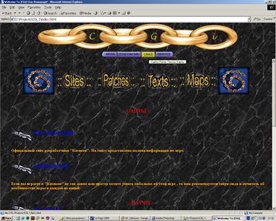
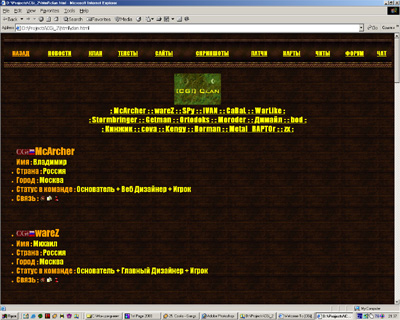
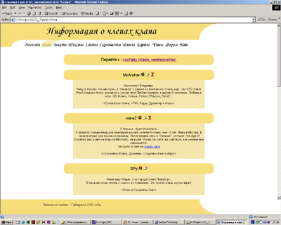

|
|
|
|
|
|
|
.:: История [CGi] ::.
Клан под названием [CGi], что расшифровывается, как "Chain of Gamers inside", официально был образован 1 июня 2001 года
воодушевлёнными игрой "Казаки:Европейские Войны" братьями McArcher'ом и wareZ'ом.
Хотя он, в принципе, существовал и в 1999 году, но тогда у клана не было даже сайта.
Чем больше играл в интернете, тем больше знакомых становилось. Вскоре набралось немного человек, желающих присоединиться к нашей команде.
В клан вступили SPY, IVAN, затем WarLike, CaBaL и Suvorov_ (двое последних очень редко появлялись в интернете).
После объявления на форуме Руссобит-М'а о наборе в клан и помещения ссылок на последние патчи, ведущие через наш сайт,
посещаемость сайта возросла на порядок,и ,как следствие, появились новые желающие вступить в клан. Вступить-то они вступили, а потом замолкли...
Уже были попытки начать внутриклановый чемпионат, который у всех нормальных кланов уже давно считался обыденной практикой.
Но успехом эти попытки не увенчались :(
Хочется отметить также то, что всё время до 11-го января 2002 года у сайта был просто идиотский дизайн:


11-го числа, наконец-то, появилось что-то достойное:

Вроде бы всё хорошо : у клана появился красивый сайт, иконка в игре, решили собрать народ на клановом собрании...
Явились на собрание единицы... Решили повторить собрание... пришло ещё меньше народу...
...клан развалился, так и не успев превратиться в нормальную команду :(((
Долго висела страница клана в сети с надписью "последнее обновление 7 февраля 2002 года".
А тем временем основатели клана ушли в другой клан : [LGT]. И, к сожалению, почти ни разу не появлялись в интренете.
Естественно, за этим следовало удаление из команды [LGT].
Ну вот прошло уже много времени с тех пор, и было принято решение всё-таки возродить [CGi].
Время покажет, что будет дальше...
McArcher (12.09.2002)
|
|
|
|
|
|